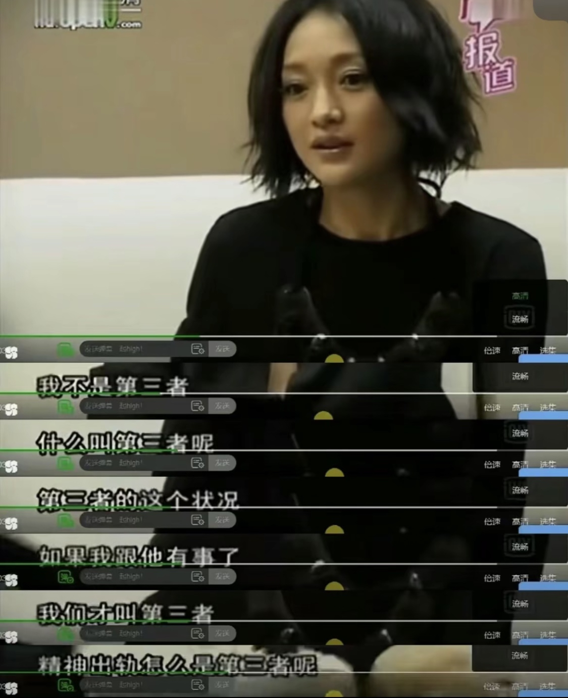
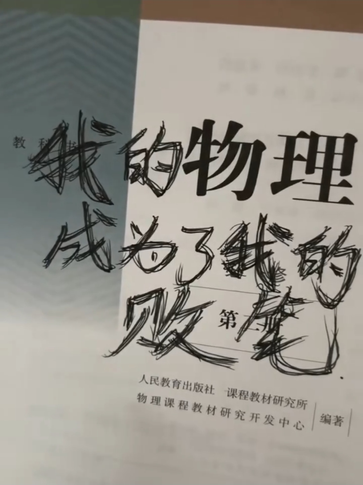
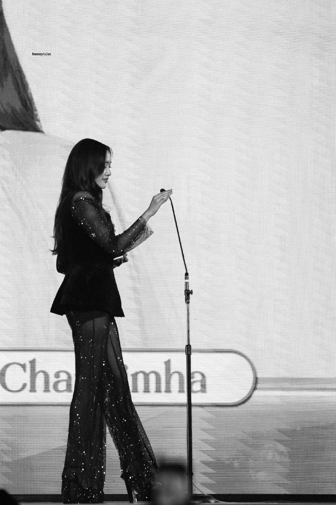

他每一年都要火一次呢，上一年还是因为慢冷知道的他[猪头][猪头]
他是我即使不粉但也希望能火的类型 唱歌太好听了
蒲熠星已经有十几首原创歌曲，也以歌手的身份参加了音综和网络春晚，还获得了唱作人奖，唱功也一直在进步，歌曲都是自己作词，很有才华，风格很多样，欢迎大家了解
那个英语老师吗？
是那个一味让学生罚站的英语老师吗[黑脸]
我不是他的粉丝，但是但是他唱歌真的很好听啊，很喜欢，又没有跑调什么，评论区在恶意啥啊[憨笑][憨笑][憨笑]
这小伙子真的太优秀了，又帅又聪明又有勇气，永远在扩展自己的舒适区。真的是家长眼中“别人家的孩子”。这半生就喜欢了两个艺人，周润发和蒲熠星[捂脸]对，我是70后。
挺好听的啊[笑哭][笑哭]还有宝宝们不要说他不是专业的歌手为他开脱，我们蒲蒲是正儿八经的歌手哦，接受正常的点评建议，蒲星也一直在学习提升自己的能力，他对这一行是很认真的不要说的好像他只是玩玩否定他的努力
福州站也请蒲熠星好吗[憨笑][强壮]
诸葛亮还是聪明不够，要是他发明飞机大炮，一个月就可以匡扶汉室了
她挑的剧本人设基本都是这样 更加从侧面证明了她现实中也是这样 喜欢这样[微笑]
从撒娇女人最好命的时候就开始喜欢演那种跟男的称兄道弟实则暗通款曲的人设了[憨笑][憨笑]
她实在是很爱男，她还跟乌啦啦吃饭还给乌啦啦扒蒜
总接这种角色其实投射的就是演员自己的三观和爱情观[裂开][裂开][裂开] 
兔兔那个，人家是正牌女友，而且还是养兔宠物的，她不吃兔兔很正常吧！
然后，因为她男朋友不同意她的求婚就被她带上了一顶渣男的帽子，多年后还千里迢迢跑去破坏她前男友的婚礼，我请问呢，谁招上这么个女的不得倒霉死啊
其实撒娇女人最好命更………我当年看也觉得很迷惑[我想静静]
她还在婚礼上穿婚纱了，真不知道我当时是怎么看完的[宕机]
我的物理成为了我的败笔[捂脸] 
对面那个外国女生是never gonna give you up的原唱
把八方来财翻译唱给外国人[捂脸]
挑战假装外国人，唱《奥特大英雄》给国人听[憨笑]
以前给她买零食都大把大把抓 但给自己买瓶饮料都会犹豫…有多少人也是这样？看看
视频里的人：👥 看视频的人：🤡
《是妈妈是女儿》感觉更是一个老外听了秒哭的一种歌[憨笑]
这个词真的看哭了…太会翻译了[流泪]
跳楼机翻译成英文撩外国女生。
23年刚遇见你 你羞涩的拍下相片纸 24年无话不谈 说过要一起看大海 25年就要分开 我的无力成为了我的败笔 《瞬》
不怕大家笑话 ，评论是我唯一的社交，看到红色消息我能开心一整天[捂脸]
真的挺奇怪的，疫情过后，大家好像都变得抽象与疯狂了，有种死了又能咋的感觉，时间概念也开始模糊[听歌][听歌]感觉2020年的那场疫情已经把世界上的所有人都带走了，然后现在只是我们每个人做的梦而且20年过后就特别恍惚，连今年是什么生肖年都要想好久[晕]感觉世界都翻新了，外边的空气都和之前的不一样了，也不知道为什么，而且天气也是莫名其妙的，秋天下雪春天阴天夏天大暴雨冬天出太阳，感觉世界都乱套了[流泪][流泪][流泪]
对面是《八方来财》的原唱
《分手之后我尿老黄了》跟这个一比那简直是如沐春风
棠夫人真是狠毒，把十三岁的棠宁当礼物送给变态男，又把外孙女操纵成下一个受害者，她的欲望就像无底巨渊，没有一丝血缘情分
“两个母亲争夺一个孩子，真母亲害怕伤到孩子，所以先放手了”
棠宁锁着棠真，棠真觉得棠宁不尊重她，是用为你好来扭曲爱，但是当棠宁放手了，棠真又觉得棠宁抛弃自己。
看到后面，为棠宁哭死，为什么她是最惨的那一个
母亲吸毒，段义也不是良人，就算去成了缅甸，她们两个下场也不会好
棠宁的饰演者演的也很好，但好像没听说通过这部电影的什么奖
麸糠现在是全麦减脂餐，可贵啦[看]
我小时候，我妈用麸糠给狗蒸窝头，然后我吃一口，狗吃一口[尬笑]
纪晓岚在清朝射出的这枚子弹，正中1942时自己的眉心
纪晓岚听了和珅的话去体验饿的感觉演了1942饿到不想说话[抠鼻]
什么糠啊，那叫全麦面包[捂脸]
这首歌没有想到这么受欢迎，本来就是喝多了，想对生活无奈的释放，可以麻醉一晚，祝愿刷到视频的朋友一切顺利。
歌老了，姐也老了，初听来月经，再听已快绝经；初听是高三，再听已是三高。老歌想哭，新歌想吐。歌还是当年的歌，姐已不再是当年的姐。歌依然陪着哥，姐依然喜欢歌[捂脸][捂脸][捂脸]
不愧是我关注的博主。[赞][赞][赞]一直不敢看的恐怖片。被你解说和剪辑。我不怕了。。。。哪天解说个搞笑版的《山村老尸》呗。是我一直不敢看第二遍的童年阴影。[握手]
不是，你这么解说我们很难判断原片的质量啊喂
泰国女演员freen，华伦天奴全球代言人 
我觉得星爷的回魂夜是喜剧片中最可怕的。
泰国是真的热啊，带个鬼女友送外卖也不觉得背后凉飕飕的[宕机][宕机][宕机]
不明白一件事，为啥两个女生其中有一个是男生装扮，那说明骨子里还是喜欢异性相貌的呀
他们叽里呱啦说啥呢
这组合也是《never gonna give you up》的原唱，超好听[泣不成声]
林正英最成功的就是，只要看到林正英出来就不怕僵尸了[捂脸]
别人演的不像，英叔不像是演的
Read more: